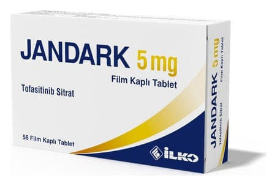

Jandark 5 mg Film Kaplı Tablet, 56 ADET

Ne için kullanılır
KT · Bölüm 1JANDARK 5 mg tablet beyaz renkli, yuvarlak, bikonveks, çentiksiz, film kaplı tablettir ve tofasitinib isimli aktif maddeyi içerir. Tabletler, 56 tablet içeren blister ambalajlarda sunulmaktadır. JANDARK aşağıdaki iltihabi hastalıkların tedavisi için kullanılır: • Romatoid artrit • Sedef artriti (psöriatik artrit) • Ankilozan spondilit • Poliartiküler Juvenil idiopatik artrit • Ülseratif kolit
Romatoid artrit (RA) JANDARK, yetişkin hastalarda orta veya şiddetli aktif romatoid artritin tedavisinde kullanılır. Romatoid artrit eklemlerinizde ağrı ve şişlik oluşmasına neden olan uzun süreli bir hastalıktır.
Eğer aktif romatoid artritiniz varsa bunu tedavi etmek için doktorunuz önce size hastalık modifiye edici anti-romatizmal (DMARD) ilaçlar adı verilen ürün grubundan bir ilaç verdiyse ve eğer bu ilaca yeterince iyi yanıt veremediyseniz veya ilacı tolere edemediyseniz doktorunuz başka bir ilaç (tümör nekroz faktörü (TNF) blokeri adı verilen bir ürün grubundan) verecektir. Eğer bu ilaca da yeterince iyi yanıt vermezseniz veya ilacı tolere edemezseniz romatoid artrit tedaviniz için JANDARK metotreksat ile birlikte verilebilir. JANDARK ayrıca metotreksat tedavisinin tolere edilemediği veya metotreksat ile birlikte kullanımın tavsiye edilmediği durumlarda tek başına da kullanılabilir. JANDARK’ın tek başına veya metotreksat ile birlikte kullanımının eklemlerde oluşan ağrı ve şişliği azalttığı ve normal günlük aktivitelerinizi gerçekleştirme becerinizi artırdığı gösterilmiştir.
JANDARK’ın diğer JAK inhibitörleri, biyolojik DMARD’lar, azatioprin ve siklosporin gibi bağışıklık sistemini etkileyen güçlü ilaçlarla eş zamanlı kullanılması uygun değildir.
Psöriatik artrit (PsA) JANDARK, 40 kg ve üzeri çocuklarda aktif poliartiküler juvenil idiopatik artrit tedavisinde kullanılır. JANDARK, sedef artriti (psöriatik artrit) denilen bir durumu tedavi etmek için kullanılır. Bu durum, sıklıkla sedef hastalığının (psöriazisin) eşlik ettiği, iltihaplı bir eklem hastalığıdır. Eğer aktif sedef artritiniz varsa, bunu tedavi etmek üzere doktorunuz önce size hastalık modifiye edici anti-romatizmal (DMARD) ilaçlar adı verilen ürün grubundan bir ilaç verdiyse ve eğer bu ilaca yeterince iyi yanıt veremediyseniz veya ilacı tolere edemediyseniz doktorunuz başka bir ilaç (tümör nekroz faktörü (TNF) blokeri adı verilen bir ürün grubundan) verecektir. Eğer bu ilaca da yeterince iyi yanıt vermezseniz veya ilacı tolere edemezseniz, aktif sedef artritinizin belirti ve bulgularını azaltmak ve günlük aktiviteleri gerçekleştirme becerinizi artırmak için JANDARK verilebilir.
JANDARK’ın diğer JAK inhibitörleri, biyolojik DMARD’lar, azatioprin ve siklosporin gibi bağışıklık sistemini etkileyen güçlü ilaçlarla eş zamanlı kullanılması uygun değildir
Ankilozan spondilit (AS) JANDARK, yetişkin hastalarda ankilozan spondilit (AS) tedavisinde kullanılır. Ankilozan spondilit omurgayı etkileyen ağrı ve şişlik oluşmasına neden olan uzun süreli bir hastalıktır. Eğer ankilozan spondilitiniz varsa bunu tedavi etmek üzere doktorunuz önce size konvansiyonel tedavilerden bir ilaç verdiyse ve eğer bu ilaca yeterince iyi yanıt veremediyseniz veya ilacı tolere edemediyseniz doktorunuz başka bir ilaç (tümör nekroz faktörü (TNF) blokeri adı verilen bir ürün grubundan) verecektir. Eğer bu ilaca yeterince iyi yanıt vermezseniz veya ilacı tolere edemezseniz ankilozan spondilit tedaviniz için JANDARK kullanılır.
JANDARK’ın diğer JAK inhibitörleri, biyolojik DMARD’lar, azatioprin ve siklosporin gibi bağışıklık sistemini etkileyen güçlü ilaçlarla eş zamanlı kullanılması uygun değildir.
Poliartiküler Juvenil idiopatik artrit (pJİA) Poliartiküler juvenil idiopatik artrit eklemlerinizde ağrı ve şişlik oluşmasına neden olan uzun süreli bir hastalıktır. Eğer sizde veya çocuğunuzda poliartiküler juvenil idiopatik artrit varsa bunu tedavi etmek için doktorunuz önce metotreksat tedavisi verecektir. Eğer bu ilaca yanıt veremediyseniz veya ilacı tolere edemediyseniz doktorunuz başka ilaçlar (tümör nekroz faktörü (TNF) blokeri ve anti interlökin 6 adı verilen ürün gruplarından) verecektir. Eğer bu ilaçlara da yeterince iyi yanıt vermezseniz veya ilaçları tolere edemezseniz ve 40 kg ve üzerinde iseniz poliartiküler juvenil idiopatik artrit tedaviniz için JANDARK verilebilir.
JANDARK’ın diğer JAK inhibitörleri, biyolojik DMARD’lar, azatioprin ve siklosporin gibi bağışıklık sistemini etkileyen güçlü ilaçlarla eş zamanlı kullanılması uygun değildir.
Ülseratif kolit (ÜK) JANDARK, yetişkin hastalarda orta veya şiddetli aktif ülseratif kolit tedavisinde kullanılır. Ülseratif kolit, iltihabi bir bağırsak hastalığıdır. Eğer aktif ülseratif kolitiniz varsa bunu tedavi etmek için doktorunuz tedavilerden bir ilaç verdiyse ve eğer bu ilaca yeterince iyi yanıt veremediyseniz veya ilacı tolere edemediyseniz doktorunuz başka ilaçlar (biyolojik ajanlar adı verilen bir ürün grubundan) verecektir. Eğer bu ilaca da yeterince iyi yanıt vermezseniz veya ilacı tolere edemezseniz ülseratif kolit tedaviniz için JANDARK verilebilir.
JANDARK’ın diğer JAK inhibitörleri, biyolojik DMARD’lar, azatioprin ve siklosporin gibi bağışıklık sistemini etkileyen güçlü ilaçlarla eş zamanlı kullanılması uygun değildir.